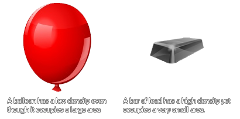

physics_fixture_set_density(fixture, density)
| Argument | Description |
|---|---|
| fixture | the index of the fixture |
| density | the density of the fixture calculated as kg/m² |
Returns : N/A
The density of something is defined as its mass per unit volume, which basically means how much mass is crammed into the space it takes up in the world. So, a balloon would have a low density as
it has little mass that occupies a large space, while a lead bar would have a high density as it has a great mass, yet occupies little space.

In the GameMaker:Studio 2D physics world mass is calculated automatically for you from the values you input for the density and by the surface area of the shape you define for
the fixture. This will have a direct impact on how much inertia a fixture has as well as how it reacts to collisions and forces, so if you make a small shape with a high density it will have a very large mass (like a
bar of lead), but if you define a large shape with a low density it will have a much smaller mass (like a balloon).
Note : If you wish the instance that is going to recieve the fixture to be static (ie: immobile in the game world) then the density should be set to 0, essentially giving it an infinite density.
physics_fixture_set_density(fix_Balloon, 0.1);
The code above will set the density of the fixture indexed in "fix_Ballon" to 0.1.